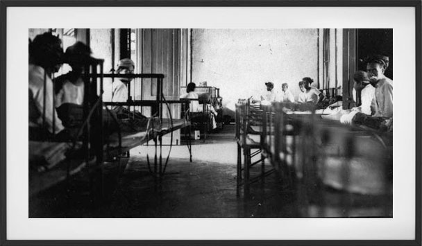
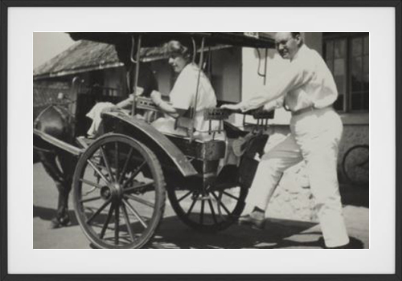

SEJARAH RSUD dr.SLAMET GARUT
“ SEJARAH RSUD dr. SLAMET GARUT
Sampai dengan tahun 1917, di Garut belum ada rumah sakit umum, baru terdapat klinik darurat untuk Stadpolitie di JalanTjiamoek Rivier Weg (Jl. Cimanuk sekarang), persisnya di Asrama Tentara sekarang. Penggagasnya adalah dr. Mulder dan dr. Stiohtor.
Sementara itu, untuk praktek umum, mereka bertempat di Gedung Padang Bulan Jalan Societstraat(Gedung BJB, Jl. A. Yani sekarang). Setelah keluar Besluit No. 10279 tanggal 19 Juli 1921 yang ditetapkan oleh Gubernur Jenderal D. Fock dan Sekretaris Jenderal G.R. Erdfrink sebagai wakil Sri Ratu Wihelmina dari Kerajaan Belanda, mulailah ditingkatkan pembangunan di daerah Priangan. Begitu juga di Garoet, jalan-jalan, saluran air, pasar rakyat, rumah sakit, lampu-lampu jalan, taman-taman, lapangan, juga jembatan-jembatan mulai dibangun. Demikian pula jembatan di atas sungai Cimanuk saat itu mulai dibangun, yang menghubungkan antara Maktal dengan jalan menuju Patrol. Dan sekitar tempat ini pula dibangunlah Rumah Sakit Umum (algemen zieken huis) yang terbilang bagus sebagai tempat perawatan orang-orang yang sakit. Rumah sakit itu berada di daerah yang dikelilingi sungai Cimanuk, sungai Cipeujeuh, dan sungai Cikamiri.

Dr. Slamet Atmosoediro, dari tahun 1927 ia ditugaskan di Zieken Huis Garoet untuk memberantas wabah pes, yang tragisnya menulari pula sang dokter, sampai akhirnya ia meninggal dunia pada tahun 1930. Sumber: KITLV).

Lapang Parijs (De Parijs Plein) dekat RSU dulu, yang digunakan sebagai tempat bermain sepakbola. Pada saat wabah pes melanda Garoet, saking banyaknya pasien konon lapang ini digunakan pula untuk menampung pasien yang tak tertampung di rumah sakit. Sumber: Tropenmuseum).
Di depan rumah sakit terdapat lapangan yang dikenal sebagai LapangParisj (De Parisj Plein) yang dipisah oleh jalan Zieken Huis straat (Jalan Rumah Sakit sekarang), yang rimbun dengan pepohonan Ki Hujan (de regen boom). Rumah sakit diresmikan oleh Gubernur Jenderal Dirk Fock (1921-1926) dan disaksikan oleh Bupati Garoet R.A.A. Soeria Karta Legawa (1915-1929) pada bulan Maret 1922.
Saat menjalankan tugasnya itu, ia terkena pula penyakit pes sampai akhirnya meninggal dunia pada tnggal 11 Mei 1930. Ketika R.A.A. Soeria Karta Legawa meninggal dunia pada hari Senin tanggal 2 Desember 1929, dan diganti oleh Wedana Cipeujeuh Tumenggung Moch, Moesa Soeria Karta Legawa, baru 4 bulan memimpin, kira-kira bulan Maret 1930, di tatar Garoet sedang berjangkit wabah penyakit pes yang diakibatkan oleh bakteri pes. Terhitung banyak korban berjatuhan meninggal dunia,. Ribuan warga desa menderita karena wabah itu. Penyebabnya adalah banyaknya sarang tikus di rumah-rumah warga di kampung, yang terbuat dari dinding anyaman bambu (bilik) dengan lantai tanah dan atap dari ijuk, tempat yang cocok untuk tikus bersarang. Besarnya dampat wabah pes membuat Pemerintah Hindia Belanda menyatakan tatar Garoet sebagai daerah yang dalam keadaan “bencana nasional”. Nama Rumah Sakit Umum dr. Slamet diambil dari nama dokter yang ikut berjuang memberantas wabah pes. Dr. Slamet Atmosoediro selaku Kepala RSU, ditugaskan oleh pemerintah Hindia Belanda sebagai ketua tim pemberantasan penyakit pes.
Tak lama kemudian, Mantri Kesehatan Mas Iyas yang tergabung dalam tim pemberantasan pes itu, juga terserang penyakit yang sama dan meninggal dunia.. Mulai saat itu pemerintah Hindia Belanda mengeluarkan aturan tentang pendirian bangunan (woning) yang harus mendapatkan ijin dari Mantri Bangunan, seperti dinding harus terbuat sekurang-kurangnya setengah tembok dan bilik, lantai harus menggunakan papan yang berjarak kira-kira sebatas lutut orang dewasa dari tanah (struktur panggung), juga atap ijuk diganti genteng yang disediakan langsung dari pabriknya di Kampung Lio. Biaya pembangunan dibantu oleh pemerintah Hindia Belanda, malah untuk yang punya rencana perbaikan rumahnya dapat dibantu dengan pinjaman dari bank, asal sesuai dengan syarat-syarata yang ditentukan Mantri Bangunan. Setelah dr. Slamet Atmosoediro meninggal dunia, kepala RS Garoet dilanjutkan oleh dr. H.R. Parjono Soerio Dipoero, pindahan dari RS Tasikmalaya. Ia menjabat kepala RSU Garoet dari tahun 1935 sampai 1945.
Untuk mengingat jasanya, nama dr. Slamet Atmosoediro dijadikan nama RSU Garoet, hingga dikenal sebagai RSU dr. Slamet hingga sekarang, yang ditetapkan berdasarkan Surat Keputusan Menteri Kesehatan RI Nomor 51/Men.Kes/SK/II/79 tahun 1979.
Disusun oleh: R. Affandhi naratasgaroet.wordpress.com

Bangsal untuk pria di rumah sakit Garoet dulu. (Judul foto: De mannenafdeling van het ziekenhuis in Garoet, Tahun: sekitar: 1925, Sumber: Tropenmuseum)
Rumah Sakit dr.Slamet tempo dulu
rsudrslamet-arsip10
Bangsal-bangsal rumah

Jembatan Cimanuk yang menghubungkan Maktal dengan RSU

Bangsal untuk penyakit-penyakit infeksi di rumah sakit Garoet dulu

Bangsal rumah sakit yang berada dekat jalan

Kepala perawat (Hulshoff) dan Administratur rumah sakit Garoet (v.d. Ernt), tahun 1930
rsudrslamet-arsip6
Ruang operasi di rumah sakit Garoet dulu
rsudrslamet-arsip7
Pemandangan ke arah rumah sakit Garoet doeloe
rsudrslamet-arsip8
Sebuah bangsal untuk pasien yang menderita penyakit infeksi di rumah sakit Garoet
rsudrslamet-arsip9
Dua orang laki-laki pribumi staf rumah sakit Garoet.
“.